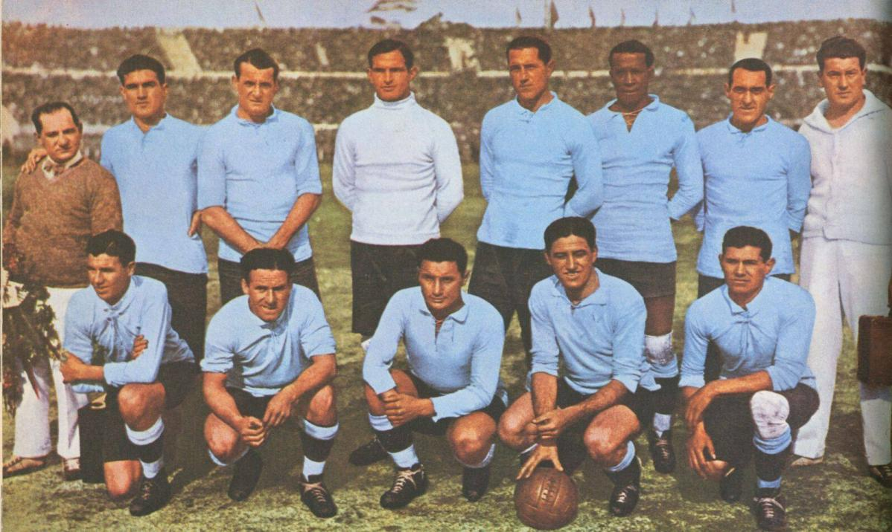
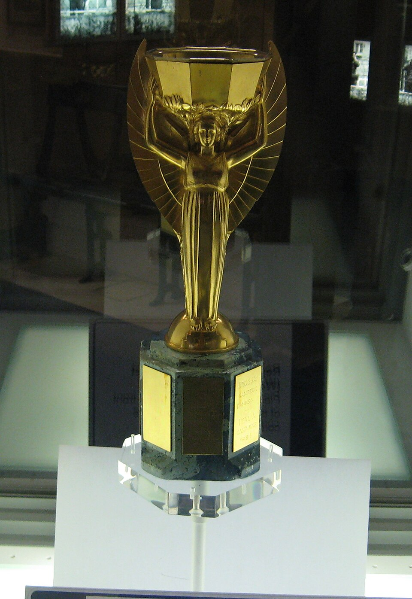
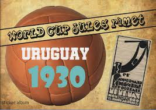
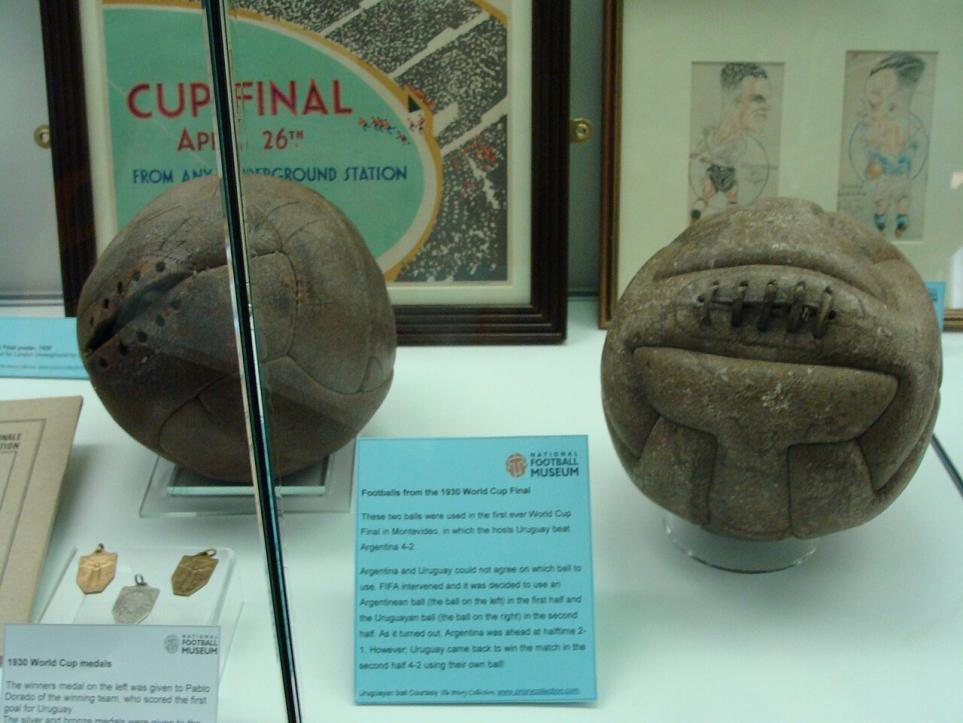
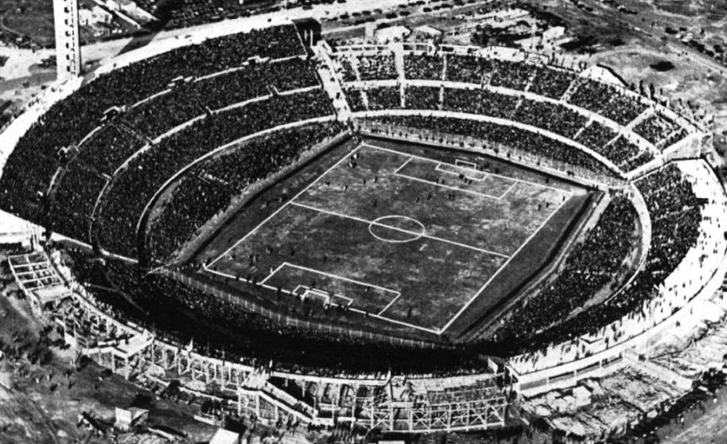
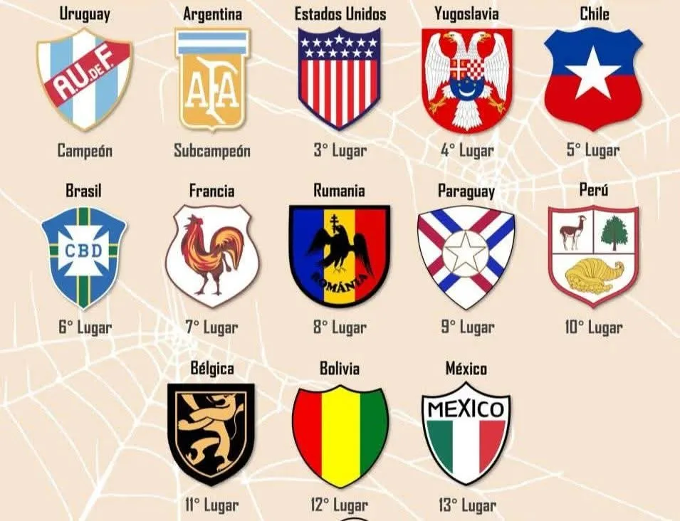
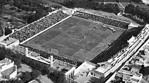
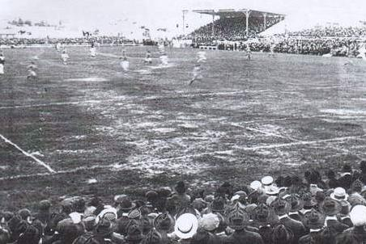
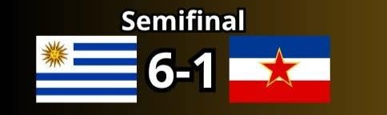
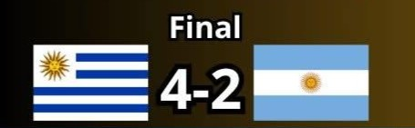

Selección Campeona del Mundo

Póster Oficial

Trofeo del Mundial

Álbum de Cromos

Balón Oficial


Selección Campeona del Mundo

Póster Oficial
Trofeo del Mundial

Álbum de Cromos

Balón Oficial

Participantes

Estadísticas
Estadios Oficiales
Estadio Centenario

Parque Central

Estadio Pocitos
Semifinales

Gran Final

Datos Relevantes
| Fecha | Grupo/Fase | Partido | Resultado | Estadio |
|---|---|---|---|---|
| 13/07/1930 | Grupo A | Francia vs México | 4-1 | Estadio Pocitos |
| 13/07/1930 | Grupo D | Estados Unidos vs Bélgica | 3-0 | Estadio Parque Central |
| 14/07/1930 | Grupo B | Yugoslavia vs Brasil | 2-1 | Estadio Parque Central |
| 14/07/1930 | Grupo C | Rumania vs Perú | 3-1 | Estadio Pocitos |
| 15/07/1930 | Grupo A | Argentina vs Francia | 1-0 | Estadio Parque Central |
| 16/07/1930 | Grupo A | Chile vs México | 3-0 | Estadio Parque Central |
| 17/07/1930 | Grupo D | Estados Unidos vs Paraguay | 3-0 | Estadio Parque Central |
| 17/07/1930 | Grupo B | Yugoslavia vs Bolivia | 4-0 | Estadio Parque Central |
| 18/07/1930 | Grupo C | Uruguay vs Perú | 1-0 | Estadio Centenario |
| 19/07/1930 | Grupo A | Chile vs Francia | 1-0 | Estadio Centenario |
| 19/07/1930 | Grupo A | Argentina vs México | 6-3 | Estadio Centenario |
| 20/07/1930 | Grupo D | Paraguay vs Bélgica | 1-0 | Estadio Centenario |
| 20/07/1930 | Grupo B | Brasil vs Bolivia | 4-0 | Estadio Centenario |
| 21/07/1930 | Grupo C | Uruguay vs Rumania | 4-0 | Estadio Centenario |
| 22/07/1930 | Grupo A | Argentina vs Chile | 3-1 | Estadio Centenario |
| 26/07/1930 | Semifinal | Argentina vs Estados Unidos | 6-1 | Estadio Centenario |
| 27/07/1930 | Semifinal | Uruguay vs Yugoslavia | 6-1 | Estadio Centenario |
| 30/07/1930 | Final | Uruguay vs Argentina | 4-2 | Estadio Centenario |
| Concepto | Dato |
|---|---|
| Campeón | 🇺🇾 Uruguay |
| Subcampeón | 🇦🇷 Argentina |
| Tercer Lugar | 🇺🇸 Estados Unidos |
| Cuarto Lugar | 🇾🇪 Yugoslavia |
| Partidos jugados | 18 |
| Goles totales | 70 |
| Promedio de goles por partido | 3.89 |
| Asistencia total | 590.549 espectadores |
| Promedio de asistencia | ≈ 32.808 por partido |
| Máximo Goleador | Guillermo Stábile (Argentina) - 8 goles |
| Selecciones participantes | 13 |
| Sede | Uruguay |